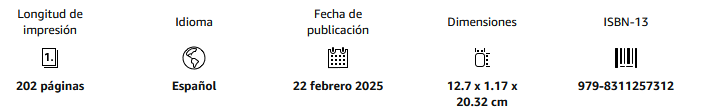

Relatos · fantástico contemporáneo · humor negro
Intemperie
Quince relatos en los que una alteración de la realidad deja a los personajes expuestos al cuerpo, la familia, el duelo, la responsabilidad, la enfermedad o la soledad.
Las anomalías cambian de un cuento a otro: adultos animalizados, presencias, intercambios imposibles, enfermedad, muertos que permanecen o familias obligadas a reorganizar sus reglas. Lo extraño no necesita una explicación completa para producir consecuencias concretas.
El volumen se concentra en esas consecuencias. El fantástico retira una protección —una certeza, una identidad, una despedida— y obliga a actuar cuando ninguna respuesta elimina del todo el problema. De ahí la recurrencia del cuidado, la fragilidad y la responsabilidad.
Datos de edición

Fragmento
«A veces, se cuenta cómo un animal atrapado en un cepo puede llegar a arrancarse la propia pata para escapar. A menudo se señala la desesperación como motor de ese comportamiento. Eso es una ingenuidad. Exige, en realidad, en la bestia atrapada, una gestión del propio dolor, una capacidad de cálculo dentro de una situación horrible y una determinación que te tendrían que preocupar, a poco sentido común que tuvieses, por si ese animal pusiera sus ojos en ti como presa. Hay gente que, por una compasión equivocada, intentará ayudar liberando al bicho, cuando la actitud correcta es la que tiene el cazador avezado: descerrajarle un tiro lo antes posible.»